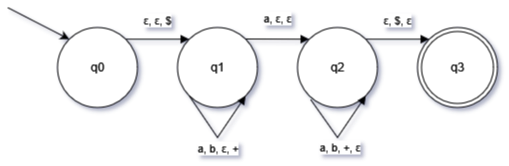
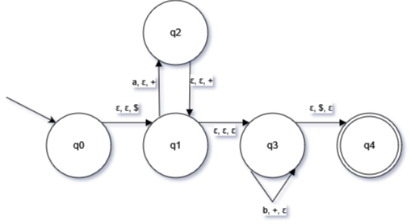

Esercizi Computabilità, Complessità e Logica
Gabriele Granzotto - AIDA - AA 2022-23
Linguaggi liberi dal contesto
Esercizio 1
Si consideri il linguaggio L⊆{a,b}∗
che contiene tutte le parole aventi lunghezza dispari che abbiano il simbolo a nella posizione centrale. Si scriva:
- Una grammatica libera dal contesto che generi L
- Un automa a pila che accetti L.
Soluzione
Come prima cosa cerco di formalizzare il linguaggio descritto nella consegna in simboli matematici:
L={w:(∣w∣=2n+1)(∀n∈N∪{0})(w=v∘v′)(∀v,v′∈{a,b}∗)(∣v∣=∣v′∣=n)}
fatto ciò:
- Definiamo una grammatica libera dal contesto che generi L:
G=<V,Σ,R,S>
V={S,A}
Σ={a,b}
Definiamo le regole R della grammatica:
S→A
A→aAb
A→bAa
A→aAa
A→bAb
A→a
- Creiamo un automa a pila che accetti L:
A=<Q,Σ,Γ,q0,δ,F>
Σ={a,b}
Γ={$,+}
L'idea di come si comporterà la pila sarà qualcosa del tipo:
Caricare→{a}→Scaricare

Il simbolo $ è stato usato per definire il livello più basso della pila mentre il simbolo + è stato usato per definire un nuovo livello della pila che prima viene caricato e poi scaricato.
In mezzo c'è un passaggio dove la pila non viene modificata e viene solo inserito il simbolo a alla parola.
Esercizio 2
Si consideri il linguaggio L⊆{a,b}∗ con L={anb2n:n≥0}. Si scriva un automa a pila che accetti L.
Soluzione
L⊆{a,b}∗
L={anb2n:n≥0}

Esercizio 3
Si scriva una grammatica che genera espressioni intere (costruire su nomi di variabili e costanti). Le operazioni standard sugli interi. Si deve prevedere la possibilità di delimitare le espressioni con delle parentesi.
Soluzione
Devo definire una grammatica libera dal contesto:
G=<V,Σ,R,S>
Definisco Σ come:
Σ={n:n∈N∪{0}}
e definisco anche V:
V={S,A}
e adesso definisco tutte le regole R della grammatica partendo dalla variabile iniziale S:
S→A
A→A+A
A→A⋅A
A→A−A
A→A÷A∖{0}
A→(A)
A→n∈Σ